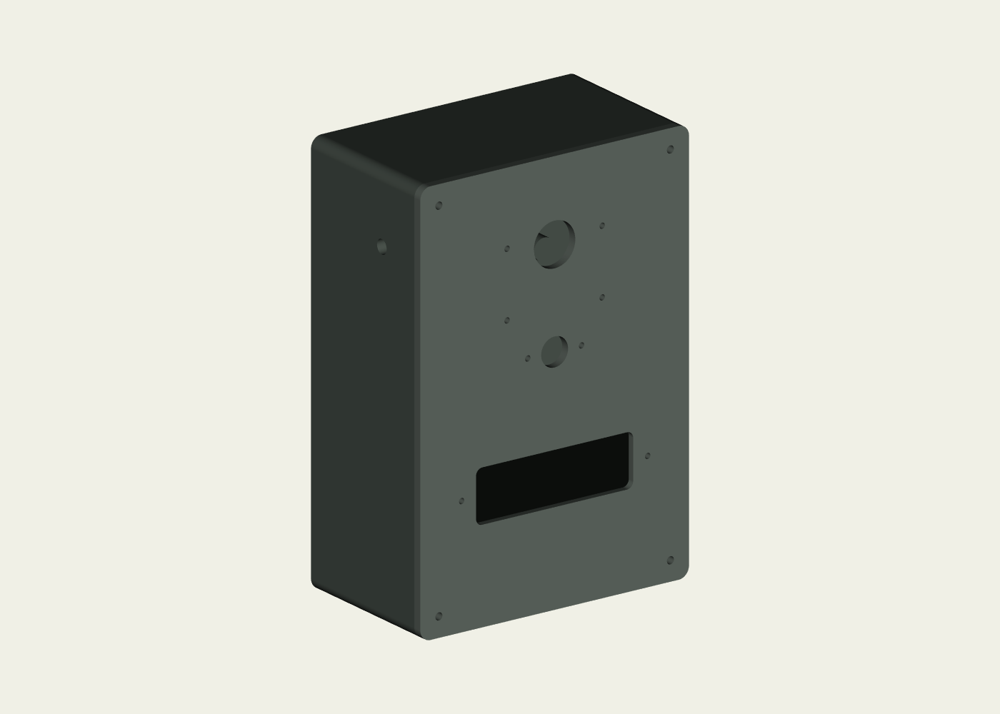
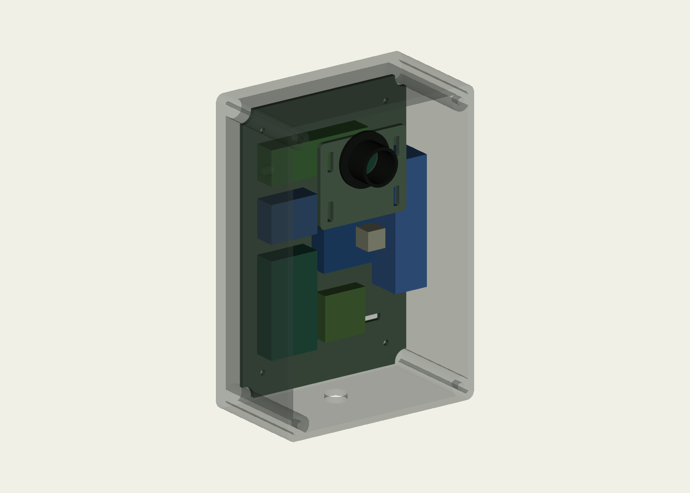

Повернуть CAD-модель
Это треугольники из опубликованных STL. Потяните мышью или пальцем; ползунок разводит детали.
Загрузка геометрии…
Что исправлено относительно красивой картинки
В иллюстрации камера стояла в глубине коробки, хотя объектив должен смотреть через переднее окно. Теперь ESP32-CAM закрепляется на отдельном держателе с внутренней стороны передней крышки, а объектив и отверстие имеют общую ось. PIR имеет своё отверстие. Три ИК-светодиода отделены от объектива непрозрачной трубкой, чтобы подсветка не отражалась в стекле камеры.
Внутри одна ячейка 18650 в держателе, отдельный управляющий ESP32, радио, часы и силовые цепи. Солнечная панель — следующий этап; она не входит в подключённую схему этого корпуса.
Иллюстрация показывает внешний вид. Размеры и детали задают CAD-файлы ниже. Это подготовленный вариант первого прототипа, не изделие, уже прошедшее дождь и зиму.
Реальная геометрия

Габарит сборки 130 × 190 × 74 мм. Коробка глубиной 70 мм, крышка 4 мм, стенки и задняя стенка 4 мм. Для корпуса достаточно стола от 220 × 220 мм при расположении длинной стороны 190 мм вдоль стола. Не забудьте оставить место для brim.
Все координаты ниже — миллиметры, вид спереди: начало в нижнем левом углу, X вправо, Y вверх. Камера: X65/Y153, отверстие Ø20. PIR: X65/Y108, отверстие Ø13. Окно ИК: X65/Y55, 76 × 24. У выбранного AM312 маленькая линза, поэтому большой купол из исходного концепта здесь заменён соответствующим окном.

Какие детали печатать
| Имя файла | Назначение | Количество |
|---|---|---|
| body | Задняя коробка, стойки и проходы SMA/PG7 | 1 |
| lid | Передняя крышка с тремя оптическими зонами | 1 |
| tray | Съёмная пластина для электроники | 1 |
| camera_carrier | Универсальный держатель ESP32-CAM на крышке | 1 |
| camera_baffle | Чёрная трубка вокруг объектива | 1 |
| ir_retainer | Рамка удержания окна подсветки | 1 |
| rain_hood | Отдельный козырёк над камерой | 1 |
| strap_bridge | Мостик под крепёжный ремень сзади | 2 |
| gasket_trial | Пробная гибкая прокладка крышки | 1, только для подгонки |
| fit_coupon | Пробник отверстий и посадок | 1 перед полной печатью |
Скачать комплект STL + STEP + исходник. В комплекте отдельные детали, assembly.step, параметры и отчёты проверки. Исходник enclosure_v02.py задаёт геометрию через CadQuery; STEP редактируется в совместимом CAD, STL отправляется в слайсер. Документация экспорта CadQuery.
Размещение плат и проводов

Цветные блоки — резерв места, а не точные модели купленных плат. В левой части располагается DevKit, рядом RFM95W и часы; справа держатель одной батареи. Передняя камера и PIR находятся на крышке. Оставьте петлю проводов, чтобы крышку можно было снять, и разъём для её полного отсоединения.
| Узел | Резерв размера, мм | Как крепить |
|---|---|---|
| DevKit | 32 × 60 × 14 | На изолирующих стойках или стяжках к пластине |
| RFM95W с переходной платой | 28 × 28 × 9 | Короткие SPI-провода, коаксиальный вывод к SMA |
| DS3231 | 36 × 27 × 12 | Изолировать нижнюю сторону; доступ к батарейке |
| DC/DC | 32 × 24 × 14 | Доступ к регулировке до закрытия корпуса |
| Силовая сборка | 68 × 22 × 14 | Компактная отрезанная перфоплата; целая 50×70 сюда не помещается |
| Держатель защищённой 18650 | 22 × 80 × 23 | Подбирается по внутренней длине и фактическому габариту |
| ESP32-CAM | 32 × 46 для платы | В держателе крышки, объектив по оси отверстия |
Перед заказом полного набора измерьте конкретные платы, высоту разъёмов, длину батареи и держателя. Универсальные прорези пластины позволяют менять крепления. Если модуль больше резерва, измените параметры CAD, а не вдавливайте его в корпус. Радиатор трёх LED и изоляция проводов должны поместиться отдельно за нижним окном; его толщина и температура ещё проверяются на макете.
Что купить дополнительно к электронике
| Деталь | Начальное количество | Что проверить |
|---|---|---|
| M3 термовставки | 8 + запас | Ø посадки 4,6 и глубина 6 — под конкретную вставку после пробника |
| M3×10 винты крышки | 4 | Зацепление вставки без упора в дно |
| M3×8 винты пластины | 4 | Стойки имеют пилот Ø2,6: нарезать резьбу или изменить посадку |
| M3×12 винты мостиков | 4 | Не пройти заднюю стенку насквозь |
| M2,5 стойки 17 мм и винты | 4 | Держатель камеры имеет регулируемые прорези; герметизация внешних головок |
| Прозрачное окно камеры | Ø26 × примерно 1–2 мм | Оптически ровное, проверить виньетирование, посадку и уплотнение |
| Окно подсветки | около 82 × 30 × 2 мм | Пропускание 850 нм; рамка и герметик, не только внешняя красота |
| Мягкое уплотнение | по контуру крышки | Силикон/EPDM под размер канавки, равномерное прижатие |
| Ремень 20–25 мм | 1 | Мостики подгоняются под толщину и ширину ремня |
| SMA проходной и PG7 | по 1 | Резьба, прокладка и фактический диаметр отверстия |
Окно PIR — штатная линза датчика, обычное стекло перед ним не ставится. Окна камеры и подсветки герметизируются раздельно. Козырёк в модели отдельный: способ крепления клеем или винтами определяется после проверки поля зрения.
Поиск покупки: вставки M3, стойки M2.5, винты M3, ремень, силиконовый шнур. Это ссылки на поиск; конкретные посадки и цены не подтверждены.
Как новичку подготовить печать
- Распакуйте архив. Сначала откройте
fit_coupon.stlв слайсере и убедитесь, что единицы — мм: ширина должна быть 56 мм. - Выберите профиль своего принтера, сопла и материала. Для первого корпуса разумен PETG, для эксплуатации снаружи можно рассмотреть ASA с подходящей закрытой камерой принтера. Начинайте с профиля производителя, а не с универсальной температуры из статьи. PETG у Prusa, ASA у Prusa.
- Для пробной жёсткой детали: сопло 0,4 мм, слой 0,2 мм, 4–5 периметров, 5–6 верхних/нижних слоёв, заполнение 25–35%. Это отправная точка, не аттестованный герметичный режим.
- Напечатайте пробник, установите винт, вставку, SMA и PG7. Если отверстие тесное, поправьте диаметр в CAD или компенсацию отверстий слайсера. Не масштабируйте всю коробку ради одного отверстия.
- Коробку печатайте задней стенкой на столе, открытой стороной вверх. Для бокового SMA-прохода оцените мосты/локальные поддержки. Крышку расположите наружной стороной на столе; пластину — плашмя. Трубку — осью вертикально, держатель — плашмя. Проверьте предпросмотр каждого слоя.
- Две копии мостика и козырёк требуют отдельной оценки ориентации и поддержек. Пробную прокладку печатайте TPU по его профилю; жёсткий PETG для неё не подходит.
- Взвесьте/осмотрите детали, уберите поддержки. Примерьте крышку без электроники. Вставки устанавливайте паяльником с подходящим жалом, ровно, после проверки пробника.
Массу и время покажет слайсер. Расчёт геометрического объёма не учитывает выбранное заполнение, поддержки и отходы. Не выдавайте клиенту цену печати до расчёта на его принтере.
Порядок сборки и проверки
Установите вставки, соберите пустой корпус и крепления. Затем поставьте окна, PIR, камеру и трубку: объектив не должен упираться в стекло, а трубка не должна срезать края кадра. Настройте положение камеры на стойках по реальному шлейфу и объективу; при необходимости измените длину трубки. После этого установите плату электроники, держатель, радиатор и кабели.
Крышка должна закрываться без давления на батарею или платы. Проверьте изображение днём, затем ночью с ИК, контролируя отражения. Проверку воды сначала проводите на пустом корпусе с сухой бумагой внутри. Осмотрите окна, головки винтов, SMA, ввод и прокладку. После вмешательства корпус не получает автоматически IP65/IP67.
Бюджет этого варианта
Исходные 12 591 ₽ относятся к MVP с готовой коробкой и небольшими печатными деталями. Собственный корпус — другая комплектация. Для планирования уберите коробку 215 ₽ и прежнюю печать 800 ₽: остаётся 11 576 ₽. Добавьте ориентир 2000–5000 ₽ на полную печать и 1000–2000 ₽ на специальные окна, вставки, стойки и крепёж: примерно 14 576–18 576 ₽ до резерва. Это предварительная оценка, не снятая цена подрядчика; уточняются также пересечения с уже заложенными мелочами/окнами.
Что проверено в файлах
10 CAD-деталей имеют валидную геометрию, положительный объём и замкнутые STL-сетки. Для шести жёстких деталей, размещённых в сборке, программно не найдено объёмных пересечений. Это проверка геометрии этих деталей: реальные покупные модули, провода, оптика, вставки, тепловой режим и герметичность ещё не испытаны. Отчёты входят в архив.